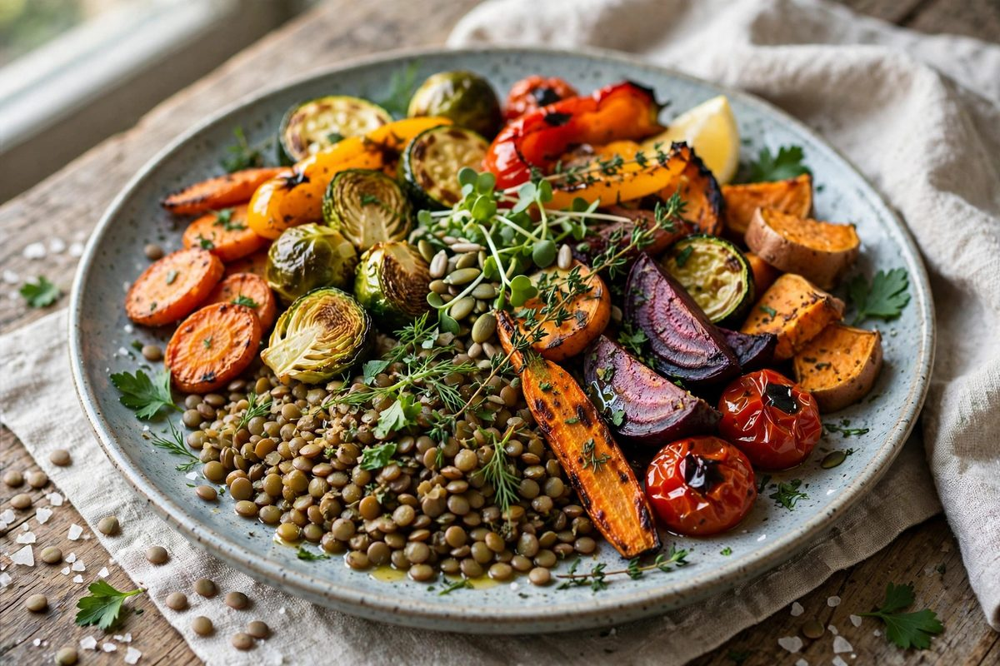

Home » Guides
Vegan Dinners

Dinner is the meal where vegan cooking really shows what it can do. Curries, pastas, stews, and roasted vegetables are naturally plant-based and satisfying for the whole family. This guide shares reliable dinner ideas for busy weeknights and relaxed weekends, with tips for cooking for mixed households.
Curries and stews
Curries are the backbone of vegan dinners. A chickpea and coconut curry, a lentil dahl, or a vegetable curry with potatoes and cauliflower are all easy, cheap, and filling. Serve with rice or flatbread and a simple salad. Stews are just as useful: a bean and vegetable stew, a mushroom and lentil stew, or a minestrone with white beans and pasta. These dishes improve with time, so make a double batch and freeze half. They are also easy to scale up for guests, and nobody misses the meat.
Pasta and noodles
Pasta is a natural vegan dinner. A simple tomato and garlic pasta with basil, a roasted vegetable pasta with olives, or a creamy cashew sauce pasta are all quick and satisfying. For noodles, try a stir-fry with tofu and vegetables in a soy and ginger sauce, or a peanut noodle bowl with shredded cabbage and carrots. Keep the pasta portion moderate and load the dish with vegetables and a protein source such as lentils, beans, or tofu, so the meal is balanced rather than just carbohydrate.
One-pan and traybake dinners
One-pan dinners save time and washing up. Toss tofu, vegetables, and potatoes with olive oil and roast them on a single tray. A sheet pan of roasted vegetables with chickpeas and tahini dressing is a complete meal. A large pan of vegetable paella, made with rice, saffron, peppers, and beans, feeds a crowd. These dinners are forgiving: if you are short of an ingredient, swap in whatever vegetables you have. Serve with bread to mop up the juices.
Cooking for a mixed household
If some of your family eat meat and others do not, cook a shared base and add protein separately. A pasta sauce, a curry, or a stir-fry can be made vegan, with meat or fish cooked separately for those who want it. Tacos and bowls work well this way too, since everyone builds their own plate. Avoid making two completely different meals, which doubles the work. Over time, many mixed households find that the vegan dishes become the favourites, and the separate meat becomes less necessary.
Weeknight dinner in thirty minutes
A thirty-minute vegan dinner is entirely possible with a little planning. Keep frozen stir-fry vegetables, tinned beans, and quick-cook grains in the cupboard, so a meal is always close at hand. Pasta with tomato sauce and white beans takes fifteen minutes. A stir-fry with tofu and frozen vegetables takes twenty. A curry made with tinned chickpeas, coconut milk, and curry paste takes twenty-five. While the main dish cooks, make a quick salad or set the table. The trick is to start with the longest-cooking element — the rice, the pasta water, or the oven — and prepare everything else while it cooks. Dinner does not need to be complicated to be good.
Frequently Asked Questions
What is a quick vegan dinner for a busy night?
Pasta with tomato sauce and white beans, or a stir-fry with tofu and frozen vegetables. Both are ready in twenty minutes.
How do I make vegan dinners filling?
Include a protein source such as lentils, beans, or tofu, add healthy fats like olive oil or nuts, and serve a proper portion of grains or potatoes.
Can children eat vegan dinners?
Yes, if the meals are varied and include enough calories, protein, iron, and vitamin B12. Talk to a health professional about supplements for children.